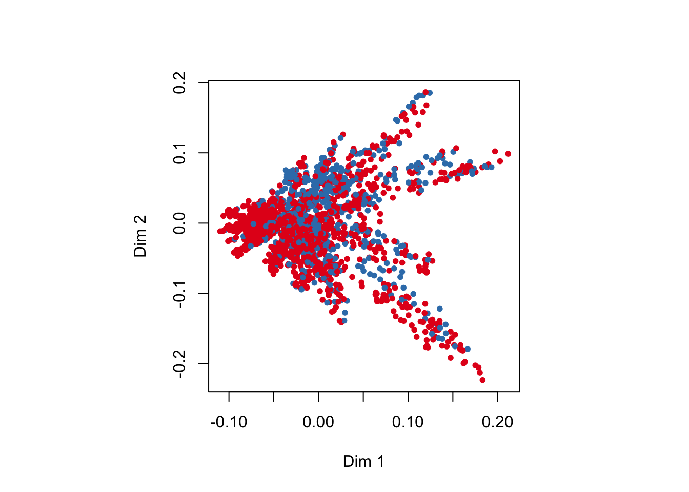

Here I am playing around with Random Forest Classification in a data set I make up.
The data set
First, I am setting up the session and the data set. I am essentially imagining a sample of individuals, for whom we know age, weight, an affected trait, maybe fitness (V02max), and have genotyped (0/1/2) four loci. We also have the phenotype of interest, perhaps a disease (0/1) that affects fitness (age and weight do, too), and is in turn caused by three of the four genotyped loci. I wanted to see how a random forest would deal with this scenario.
library(tidyverse)
── Attaching core tidyverse packages ──────────────────────── tidyverse 2.0.0 ──
✔ dplyr 1.1.1 ✔ readr 2.1.4
✔ forcats 1.0.0 ✔ stringr 1.5.0
✔ ggplot2 3.4.1 ✔ tibble 3.2.1
✔ lubridate 1.9.2 ✔ tidyr 1.3.0
✔ purrr 1.0.1
── Conflicts ────────────────────────────────────────── tidyverse_conflicts() ──
✖ dplyr::filter() masks stats::filter()
✖ dplyr::lag() masks stats::lag()
ℹ Use the conflicted package (<http://conflicted.r-lib.org/>) to force all conflicts to become errors
library(randomForest)
randomForest 4.7-1.1
Type rfNews() to see new features/changes/bug fixes.
Attaching package: 'randomForest'
The following object is masked from 'package:dplyr':
combine
The following object is masked from 'package:ggplot2':
margin
Warning: The `x` argument of `as_tibble.matrix()` must have unique column names if
`.name_repair` is omitted as of tibble 2.0.0.
ℹ Using compatibility `.name_repair`.
colnames(genotype_df) <-paste0("locus_", 1:count_loci)additional_data <-tibble(ID =1:count_individuals,weight =rnorm(count_individuals, mean =80, sd =5),age =sample(20:80, count_individuals, replace =TRUE) )data_combined <-bind_cols(additional_data, genotype_df)make_binary_trait =function(row) {# here are the rules how the binary trait is generated data_combined_slice <-slice(data_combined, row)#print(data_combined_slice) individual_risk <-0 individual_risk <- individual_risk + (pull(data_combined_slice, locus_1)) *0.1# additive effect individual_risk <- individual_risk + (pull(data_combined_slice, locus_2)) *0.1 individual_risk <- individual_risk + (pull(data_combined_slice, locus_3)) *0.1 individual_risk <- individual_risk + ((pull(data_combined_slice, locus_1) ==2) * (pull(data_combined_slice, locus_2) ==2)) *0.4 individual_risk <- individual_risk + ((pull(data_combined_slice, locus_1) ==2) * (pull(data_combined_slice, locus_2) ==2) * (pull(data_combined_slice, locus_3) ==2)) *0.9# multiple homozygous alleles needed for a strong epistatic effectif (individual_risk >1) { individual_risk <-1 } phenotype <-rbinom(1, 1, individual_risk)return(phenotype)}add_affected_trait <-function(row) { data_combined_slice <-slice(data_combined, row) mean <-40# the average in the healthy population of a trait, say VO2max mean <- mean - (pull(data_combined_slice, phenotype) ==1) *5# decrease in 5 for those with the phenotype mean <- mean -pull(data_combined_slice, weight) *0.1# decrease with weight mean <- mean -pull(data_combined_slice, age) *0.1# decrease with agereturn(rnorm(1, mean, sd =3))}# add the phenotype and affected trait to the data framedata_combined$phenotype <-as.factor(unlist(lapply(1:nrow(data_combined), make_binary_trait )))data_combined$affected_trait <-unlist(lapply(1:nrow(data_combined), add_affected_trait))data_combined$weight =as.numeric(scale(data_combined$weight, center =TRUE, scale =TRUE))data_combined$age =as.numeric(scale(data_combined$age, center =TRUE, scale =TRUE))data_combined$affected_trait =as.numeric(scale( data_combined$affected_trait,center =TRUE,scale =TRUE))summary(data_combined$phenotype)
0 1
1334 666
Above, you can see the distribution of the phenotype. A bit imbalanced, but still plenty of samples.
Let’s have a look at the traits we have. But note that they have ben scaled for better modelling.
Warning in RColorBrewer::brewer.pal(nlevs, "Set1"): minimal value for n is 3, returning requested palette with 3 different levels

Without any supervision, we do not see strong structuring along the phenotype (color), but some can be seen.
Can we get a good prediction with a random forest classification after some tuning?
library(caret)
Loading required package: lattice
Attaching package: 'caret'
The following object is masked from 'package:purrr':
lift
# split the dataids <-createDataPartition(data_combined$phenotype, p =0.8, list = F)train_set <- data_combined[ids, ]test_set <- data_combined[-ids, ]cn <-trainControl(method ="cv", number =10)grid <-expand.grid(mtry =2:(ncol(train_set) -1))fit <-train( phenotype ~ .,data = train_set,method ="rf",trControl = cn,tuneGrid = grid,ntree = count_individuals *10,maxnodes =500 )
Let’s see how well the model works!
p <-predict(fit, test_set %>%select(-(ncol(test_set) -1)))print(cM<-confusionMatrix(p, test_set$phenotype))
Confusion Matrix and Statistics
Reference
Prediction 0 1
0 242 32
1 24 101
Accuracy : 0.8596
95% CI : (0.8216, 0.8922)
No Information Rate : 0.6667
P-Value [Acc > NIR] : <2e-16
Kappa : 0.6794
Mcnemar's Test P-Value : 0.3496
Sensitivity : 0.9098
Specificity : 0.7594
Pos Pred Value : 0.8832
Neg Pred Value : 0.8080
Prevalence : 0.6667
Detection Rate : 0.6065
Detection Prevalence : 0.6867
Balanced Accuracy : 0.8346
'Positive' Class : 0
So, concluding for now, we have built a random forest that is a able find 90.98% of individuals with an imaginary disease that decreases their physical fitness and is determined by three loci in a additive and epistatic fashion. We would probably not be able to use this model on a large number of loci because of performance (already this takes about an hour or so on one core), but I am curious how well it still works when there are more loci (of course, building a new forest with those first). But first, I need to look at some other models.